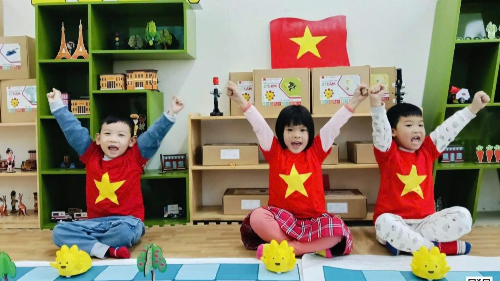
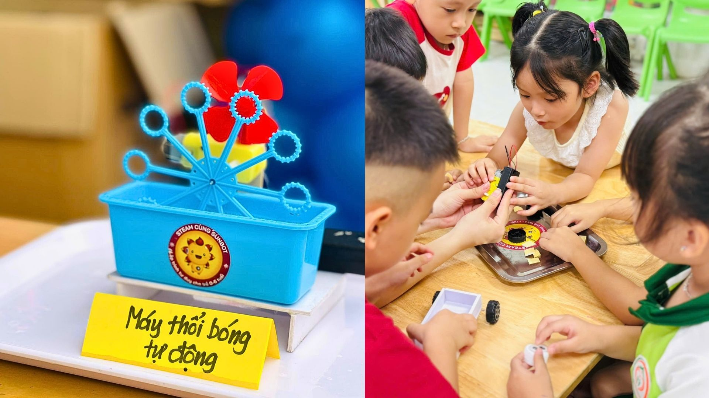

Sunbot.
300+Cơ sở giáo dục trước 2026
50.000+Trẻ em đã tiếp cận Sunbot
3 nămLộ trình Sunbot Core: Bé – Nhỡ – Lớn

Công nghệ là phương tiện. Sự phát triển của trẻ là mục tiêu.
Hoạt động Sunbot đặt trẻ vào tình huống có mục tiêu để trẻ quan sát, dự đoán, đề xuất phương án, thử nghiệm, phát hiện lỗi, điều chỉnh và chia sẻ. Giáo viên quan sát cả quá trình suy nghĩ và hợp tác, không chỉ sản phẩm cuối cùng.
Sắp xếp bước, dự đoán đường đi, xây chuỗi mệnh lệnh và lập kế hoạch.
Thử – sai – sửa lỗi trở thành một phần tự nhiên của quá trình học.
Trẻ trao đổi, phân vai, chia sẻ cách làm và giải thích kết quả.
Sunbot tổ chức nội dung theo năm lớp: phân môn, cấu hình chuyên môn, chương trình theo thời lượng, sự kiện và không gian triển khai.
V2 ưu tiên video, ảnh hoạt động, hồ sơ chuyên môn và kinh nghiệm triển khai; loại bỏ các tuyên bố như “100% trẻ yêu thích” hoặc “95% tăng tư duy” khi chưa có thiết kế đo lường đủ chặt.




Kiro Việt Nam phát triển chương trình, robot và học liệu; đào tạo giáo viên; tổ chức vận hành; đồng thời xây các công cụ nhật ký, báo cáo, đánh giá và kiểm soát chất lượng để hỗ trợ triển khai ở quy mô lớn hơn.
Hai phân môn, Sunbot Core, Camp, Day, Corner và Lab cùng một kiến trúc chuyên môn.
Có thể Sunbot trực tiếp dạy, đồng vận hành hoặc chuyển giao cho giáo viên nhà trường.
Hướng tới dữ liệu lớp học, trẻ, thiết bị, chất lượng và báo cáo quản trị có cấu trúc.